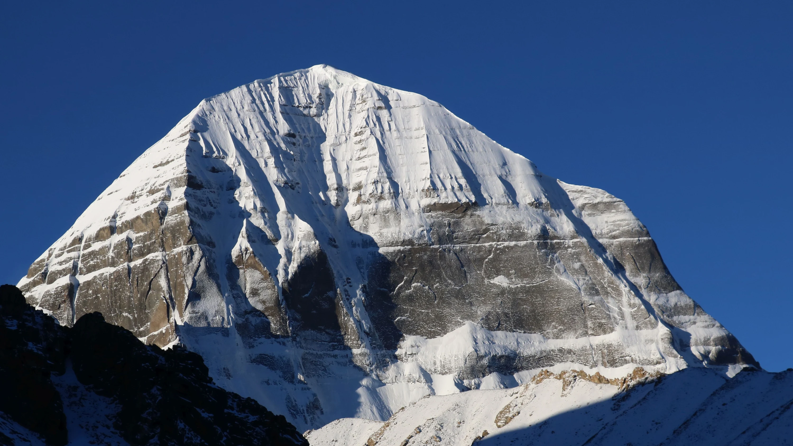

ГЛАВНАЯ ГЛАВА · ДНИ 12–14Кора
Кора
вокруг Кайласа.
Три дня пешего обхода священной горы: северный склон у Дрира Пхук, перевал Дролма-Ла и путь к Зутул Пхук. Для паломников это практика, проживаемая шаг за шагом; для нас — ещё и серьёзный высокогорный маршрут, требующий внимания к себе.
Три дня коры в программе